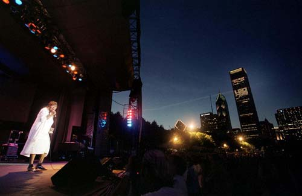
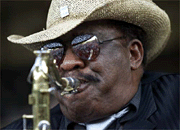

С 8 по 11 июня более полумиллиона зрителей посетило ХVII Чикагский блюз-фестиваль, крупнейший в мире бесплатный блюзовый фестиваль.

Полуденный концерт под палящим солнцем отыграла гитаристка Биверли "Гитара" Уаткинс (Beverly "Guitar" Watkins) из Атланты. Она играла зажигательный блюз, держа гитару на загривке, дуя в губную гармонику и радуя тоскующую по холодному пиву публику феминистскими вариантами шаловливых блюзовых стандартов, типа "Miz Dr.Feelgood".
Блестящий концерт дал ветеран соул-блюза певец-гитарист Литл Милтон (Little Milton). Большим сюрпризом стало гостевое появление в его программе гитариста Уоррена Хейнеза (Warren Haynes) из тяжелой блюз-рок-группы "Гавт Мюл" (Gov't Mule). По мнению очевидца, "его тяжеловесный слайд в стиле Южного рока был полной антитезой высококлассной и утонченной милтоновской смеси блюза и соул-музыки". Вечер открыли гитарные звезды нынешнего поколения: модернистка блюзрока Дебора Коулмэн и традиционалист Джон Праймер (John Primer), представивший программу в стиле 50-х, близкую звучанию отчасти блюзбэнда Мадди Уотерса, отчасти - Элмора Джеймса. Причем, большую часть его программы составляли его авторские песни, хотя нашлось место и нескольким стандартам, вроде бессмертной "Caldonia".
Специальный концерт был посвящен памяти Куртиса Мейфилда (Curtis Mayfield). В нем, среди прочих, принял участие легендарный аранжировщик-саксофонист Жен Бардж (Gene "Daddy G" Barge), чье имя вы найдете на десятках и сотнях классическх блюзовых записей. В этом же концерте певица Одетта (Odetta), номинантка на премии им.В.К.Хэнди и Грэмми этого года, посвятила исполнение песни "Глори, глори, аллилуйя" памяти Джонни Тейлора (планировалось, что выступление Тейлора должно завершить фестиваль).
Гитаристы Лонни Брукс, Филипп Уокер и Лонг Джон Хантер представили концертную программу техасского стиля "Lone Star Shootout" - по следам своего одноименного прошлогоднего "аллигаторовского" альбома.
90-летию Хаулин Вулфа была посвящена специальная концертная программа, в которой выступили музыканты, игравшие с Вулфом: саксофонист

Эдди Шоу (Eddie Shaw), гитарист Хьюберт Самлин, пианисты Хенри Грей (Henry Gray) и Детройт Джуниор (Detroit Junior) - большинство из них до сих пор находится под чарами Волка, которые не дает им утвердить собственный стиль. Зато барабанщик и поэт Сэм Лэй (Sam Lay), игравший с Хаулин Вулфом, Мадди Уотерсом и Полом Баттерфилдом - это для начала списка, выступил неожиданно как гитарист! Концерт завершила Коко Тейлор, исполнив "Wang Dang Doodle" (песню, которую Хаулин Вулф впервые записал в 1960, а она - в 1965, под руководством все того же Уилли Диксона). Так же в фестивале приняли участие патриархи: David "Honeyboy" Edwards, Frank Edwards и Homesick James. Выступали гитаристы-чикагиане Little Smokey Smothers и Eddie C. Campbell, и давно покинувший Чикаго вечный гастролер-певец-шоумэн Бобби Раш, гость прошлогоднего московского Efes-фестиваля.